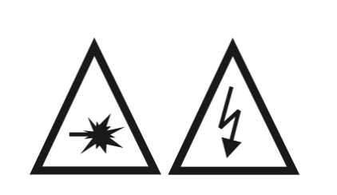

Welcome to the FP Optics¶
Motivation¶
Understanding the properties of light and its interaction with matter has been a major subject of scientific study for many centuries. From the refraction of light (described by Snell’s law in the 17 th century) to the field of quantum optics, our knowledge of light has undergone tremendous improvements over time. Using this knowledge, we have not only been able to understand various physical phenomena around us, we have also been able to create devices to generate light as well as control its properties, which is the basic premise of the field of Photonics.
In this regard, solid state devices play a crucial role as they have two main advantages:
The miniaturization, scalability and accuracy of optical elements and their interface (e.g. for the communication industry);
The extraordinary physical effects of some crystals on incident or transmitted light (e.g. frequency doubling, photon down conversion, polarisation rotation).
In this lab-course we will address the second issue and give you an introduction to three main properties of a light wave namely, polarization, phase and frequency. Moreover, we will see how we can modulate these properties using devices and optical components such as wave-plates, polarizing beam-splitters, Electro-optical modulator and acousto-optical modulator. Following this lab-course, you should have a basic knowledge of these experimental tools.
Safety¶
{kind=link}
Always use the safety glasses when the laser is on. If the laser light hits your eye, it will immediately cause irreversible damage. When handling with reflecting surfaces, take care you don’t produce arbitrary beams: don’t wear watches or jewelry. Even if you wear the safety glasses, never look directly into the laser beam! You should also not sit down beside the table.
Be careful with high voltage. Never change the set-up while the high voltage power supply is on!
Do not lean on the tables, the dampers (air-cushions) below could burst!
Program of the lab-course¶
The experiments are divided into three blocks, for each experiment we start out with a short introduction to the underlying theory of the effects which you will study followed by the instructions to the experiment. A very good reference book for this lab course is “Fundamentals of Photonics” by B.E.A. Saleh and M.C. Teich, 2nd Edition. In order to learn more about optoelectronics, the book “Lasers and Electro-Optics. Fundamentals and Engineering” by Christopher C. Davis is highly recommended.
Please be prepared for each experiment on the first day, as there exists only one setup of each experiment and you will need to switch those daily with your fellow students.
Report issues¶
If you have any issues with the instructions please report them in the associated repository through the link on the top of the page.